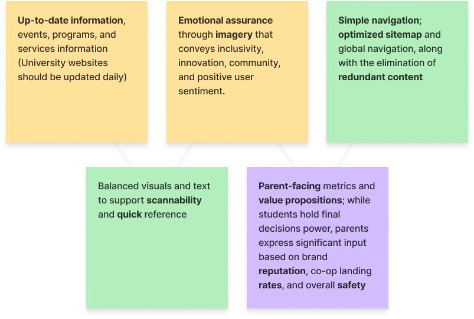

In Novemeber of 2024, I undertook an ambitious redesign of the University of Waterloo website as part of a course project;
prompted by consistent frustration I heard from students, parents, and faculty.
This project reimagines the site with a focus on clarity of content, strengthened brand reputation, and ease of
navigation. My process spans user research, user testing, information architecture,
UI design, and HTML/CSS development.
The University of Waterloo is home to over 40,000 students and a leader in innovation and research, but lacks a website that reflects its prestige. While containing effective content and consistent branding, information is fragmented, difficult to navigate, and lacks innovative design practices—increasing inaccessibility and reducing trust. A website design is needed to provide a clearer structure, improved usability and design system, and a stronger reflection of the university’s brand identity.
Create a user-focused experience through redesigning and coding four key web pages. The new design will enhance navigation, legibility, and structure while retaining familiar brand elements and emphasizing Waterloo’s innovative culture.
• Large amounts of unstructured content
• Lack of clarity around programs and access
• Missing typographic hierarchy and contrast
• Lack of persistent and intuitive navigation
of high school students use institution websites to guide their college research processes.
of students like or expect websites to show personalized content.
is the average NPS of university websites in usability tests.
of students' biggest pain points was sites returning old or irrelevant results.
* UX Trends in University Websites (e-Expectations, MeasuringU, NN/g)
To ensure the most impactful and intuitive user experience, I implemented a comprehensive user-centered design process:
I conducted a comprehensive review of the website, focusing on design principles, content, navigation, and overall user experience. After conducting a usability test with myself on the site, I documented the key pain points, summarized in this video presentation:
I conducted three interviews on the primary users of institution websites—students, prospective students, and guardiens—to understand the 4 W's of user engagement. Participants include:
1. A parent
2. Current University of Waterloo student
3. Student from another Ontario university
• To learn about co-op, safety of my child, and professors
• To learn about the school, programs, and campus life
• For resources like advisors info, graduation details, and tutor support
• Find program prerequisites, application details, course info, involvement opportunities, and campus life (prospective applicants)
• Learn about statistics, involvement opportunities, and employment rates (guardiens of current and prospective students)
• Current Students: Find course information, professors, staff, and wellness resources.
• At home; on mobile or desktop devices (all)
• At school; to find more information and resources (current students)
• Frequently, throughout the year
• Insight: Content should be regularly updated
Each user group (students, applicants, parents) shares overlapping information needs: quick, digestible academic, campus, and service-related information.
Conducted a card sorting exercise to uncover users’ mental models of the information architecture of a website. I crafted a list of keywords from user interviews, grouping the most relevant ones.

Figure 1: Global Navigation Card Sorting

Figure 2: Local Navigation Card Sorting
Identified and outlined key priorities to guide a results-driven moodboard, drawing inspiration from design platforms like Behance, Awards, and Dribble, including top-performing (benchmark) university websites like Stanford.

Figure 3: Figma Moodboard
I studied and referenced the University of Waterloo's official brand guidelines.
I then made necessary replacements to develop a design system more accurate to the University of Waterloo student culture.
I used the wider sans-serif typeface "Raleway" to create a more welcoming user experience (wider fonts create mental associations within users of approachability and oppenness)
and improve accessibility through this more readable font.

Figure 4: Before

Figure 5: After
I designed sitemap visuals (before and after) and evaluated whether the revised information
architecture met user requirements and key considerations.
The sections highlighted in yellow in Figure 7 were selected for redesign.

Figure 6: Previous Sitemap

Figure 7: Improved Sitemap


Figure 8: Design Rationale of First Two Website Sections

Figure 9: Final Iteration of Design on Figma
My redesign of the University of Waterloo website, completed on December 10, 2024, delivers a more engaging visual identity, improved UX, and content tailored to address real user needs.
• Card Sorting: Helped structure and organize a clearer, navigation-first solution
• Brand Prioritization: Maintained a cohesive design style by developed a refreshed design system that kept brand colors while introducing new fonts for a more modern, welcoming look
• Competitor Analysis: Sped up visual and UX inspiration collection process by referencing well-recieved university sites worldwide
• User & School Needs: Led with admissions to appeal to prospective students, and added a Give page to support long-term impact
• Time Allocation: To speed up the coding process, I could alot more time to
planning the HTML structure before diving into coding
• Design System: With more time, adding more elements to the design system could
futher improve cohesion accross web pages
• Conducting usability testing on the mobile prototype to validate
design choices through heuristics and user feedback
• Interviewing prospective students to understand evolving expectations and content gaps
• Presenting the final concept to the University of Waterloo for potential collaboration or feedback
• Designing a mobile website — many institutions lack strong
mobile UX, despite studies showing that students increasingly
access sites exclusely through mobile devices